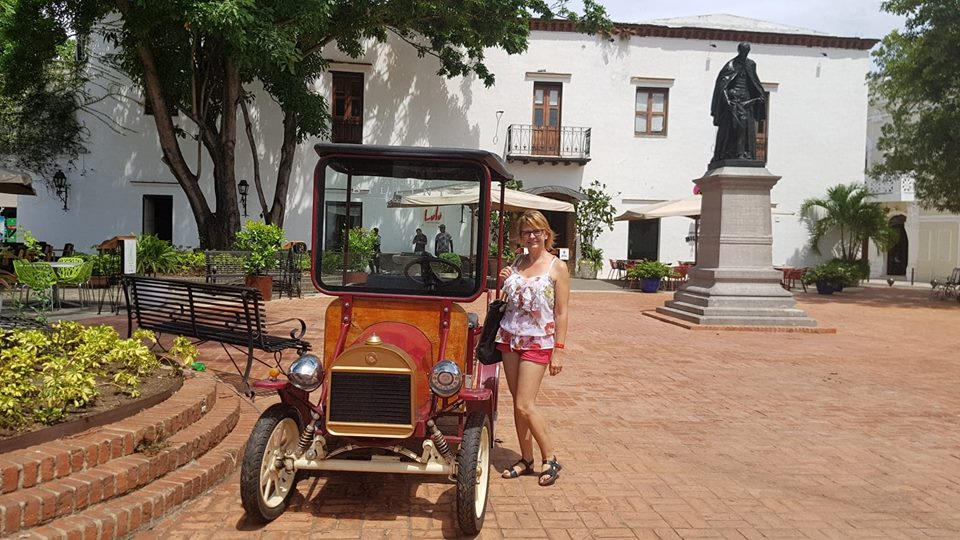

Open youy eyes to see the color of picturesque scenery, diverse cultures, funiest activities,
local gastronomy and the specific of peoples...
Summer destinations
Winter destinations
My summer experience 2018:
The journey took us from the colonial streets of Santo Domingo to the beautiful beaches
of
the North Coast –Santo Domingo Puerto Plata and Sosua – stopping along the way to
explore
the off-beaten path towns.
The Dominican Republic has so much to offer that my seven-day trip felt short. With breathtaking
mountain scenery, vivid colonial streets, beach galore, valleys of lush tropical rainforests, and
even
arid semi-deserts, the Caribbean country has something for everybody!

Eat&Drinks
What do we eat and drinks?
Dominicans call their cuisine comida criolla and it’s a delicious – if often rather greasy – blend
of
Spanish, African and Taino elements, with interesting regional variants across the island. Dishes
usually include rice and beans – referred to locally as la bandera dominicana (the Dominican flag)
–
using either habichuelas (red beans) or the tiny black peas known as morros. Most often the rice is
supplemented with chicken either fried, grilled or served asopao (in a rich, soupy sauce).
Invariably
main courses come with plátanos (deep-fried green plantains), which locals often inundate with
ketchup
and a small coleslaw salad.
Mama Juana (or Mamajuana) is a drink from the Dominican Republic that is concocted by allowing rum,
red
wine, and honey to soak in a bottle with tree bark and herbs. The taste is similar to port wine and
the
color is a deep red.